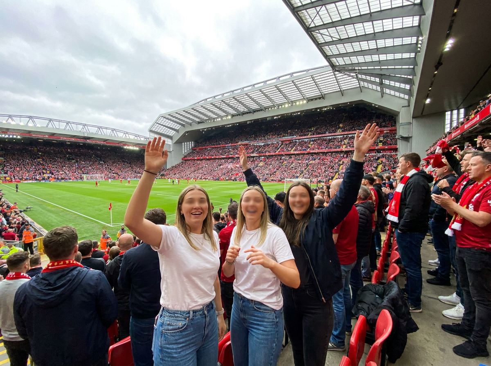
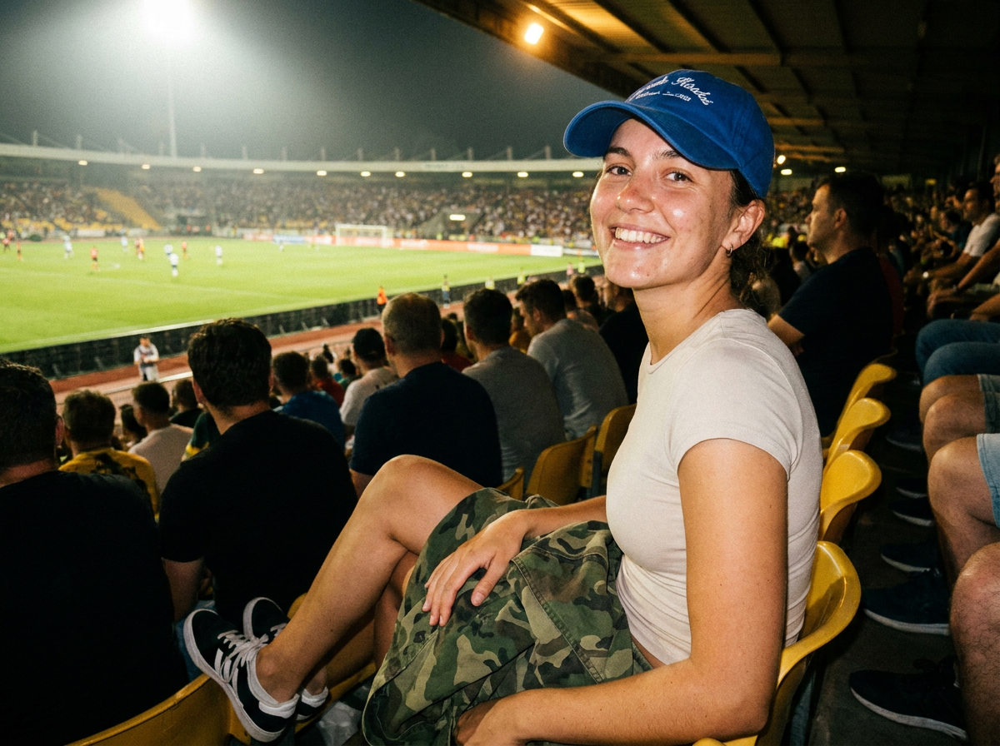
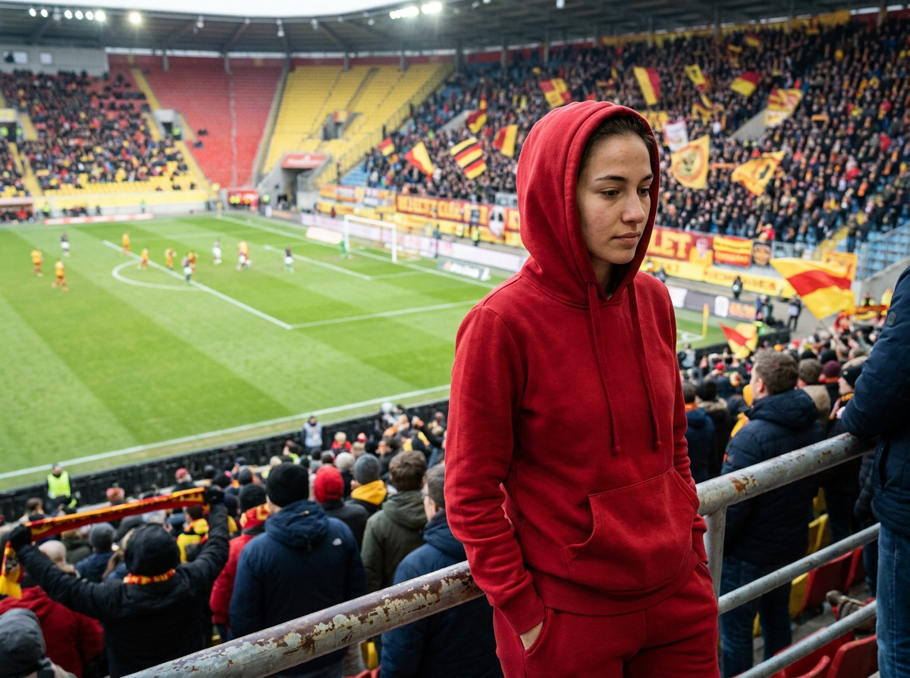
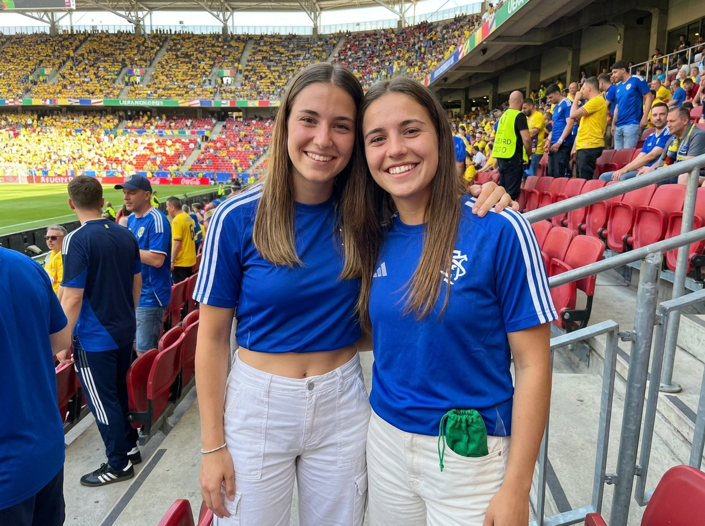
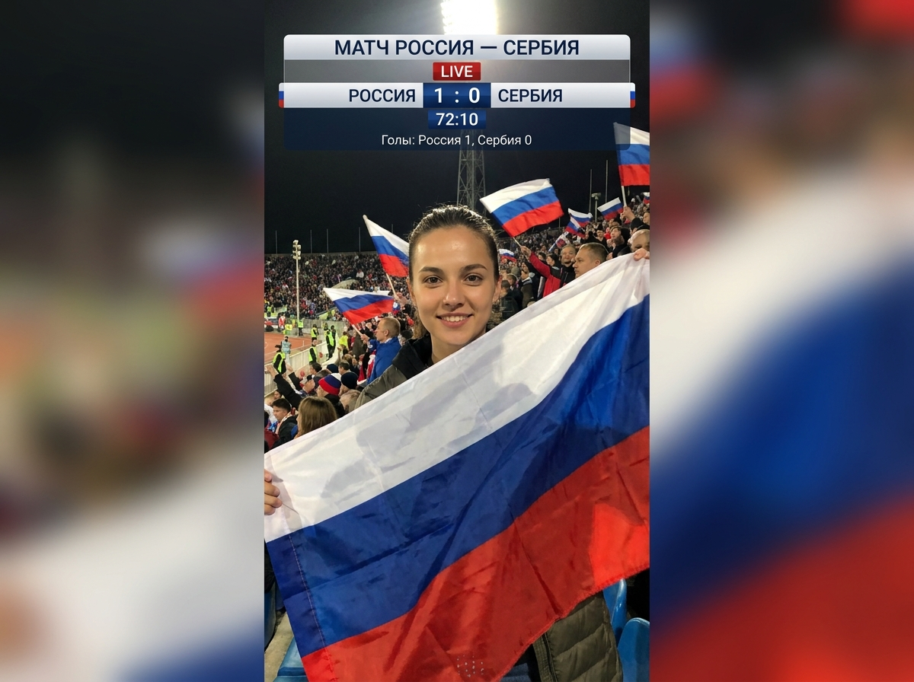
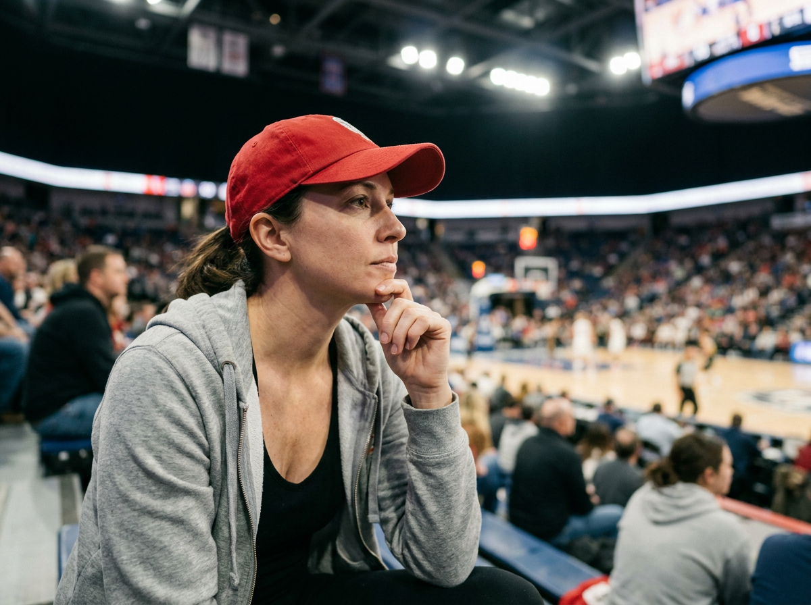
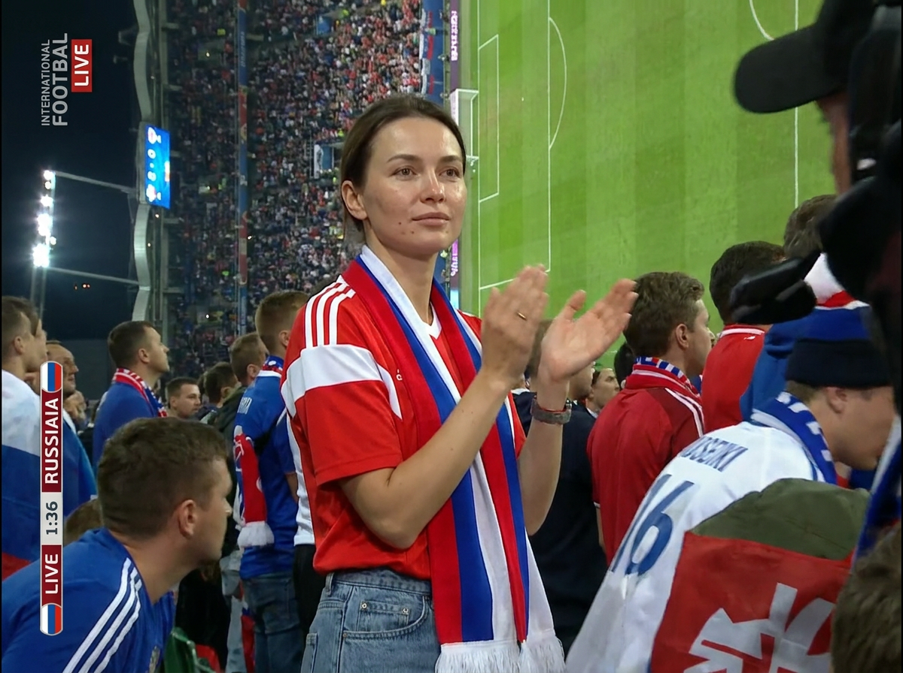
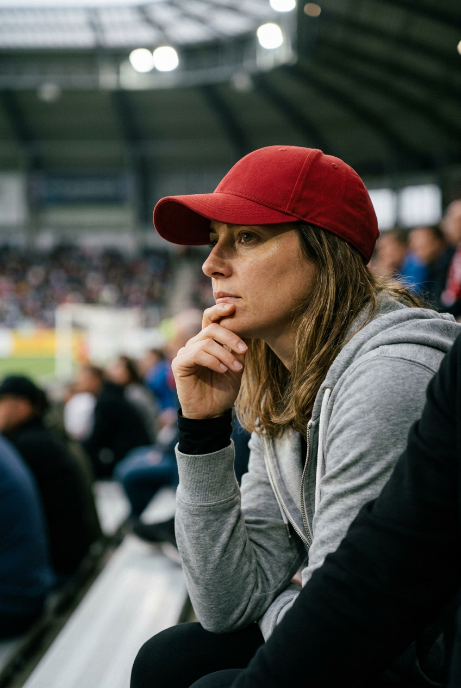
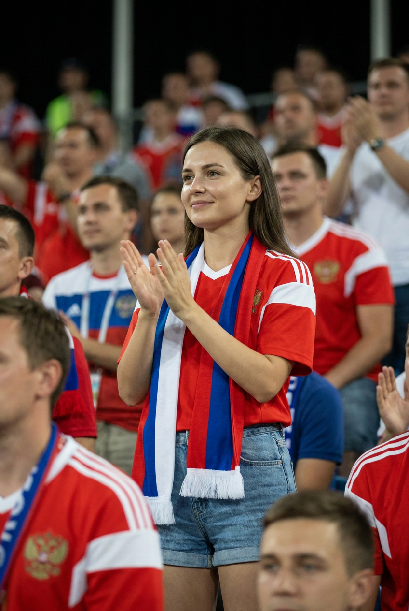
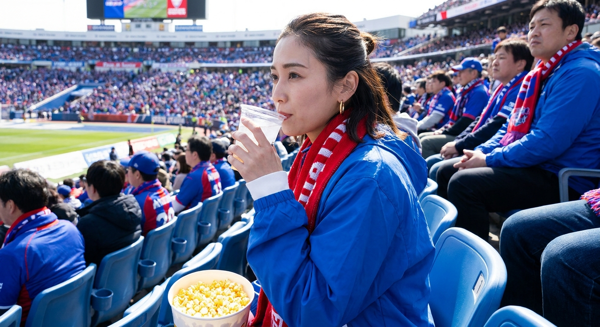

ИИ-фото на стадионе: 10 промптов для нейросети

Стадион в кадре часто выглядит ненатурально: лица теряют индивидуальность, руки ломаются, трибуны превращаются в пятна, а флаги и надписи искажаются. Грамотная генерация помогает собрать правдоподобное фото болельщика, будто его сняли рядом с сектором или во время прямого эфира.
В подборке — 10 сценариев для ИИ-фото на стадионе: эмоциональная компания у поля, ночной портрет на жёлтом кресле, девушка в спортивном костюме, селфи, российский триколор, candid-кадры с напитком и эффект телетрансляции.
Как сгенерировать такое фото: пошагово
Нужен снимок анфас при ровном свете, лицо в кадре целиком, без тёмных очков и головных уборов. Разрешение от 1000 пикселей по короткой стороне. Чем чётче исходник, тем точнее модель повторит черты.
Выберите сценарий ниже и нажмите «Копировать» — текст уйдёт в буфер целиком, вместе с командой сохранения внешности. Эта команда стоит первой строкой и отвечает за то, чтобы на выходе было ваше лицо, а не случайное.
Кнопка «Сгенерировать» рядом с каждым промптом открывает модель в новой вкладке. Nano Banana Pro работает с референсом лица — в отличие от моделей, которые генерируют портрет с нуля и узнаваемость теряют.
Промпт — в поле ввода, портрет — через загрузку референса. Порядок значения не имеет, но без референса команда сохранения внешности работать не будет: модели нечего сохранять.
Для сторис и ленты берите 9:16, для превью и обложек — 4:3. Первый результат редко идеален: если поза или свет ушли не туда, поправьте соответствующую часть промпта и запустите заново. Обычно хватает двух-трёх итераций.
10 промптов для генерации
1. Праздник у футбольного поля
Строго сохранить внешность по загруженному референсу: черты лица, пропорции, мимику и текстуру кожи без изменений. Фотореалистичная репортажная фотография с футбольного стадиона в момент общего праздника. Камера находится совсем рядом с болельщиками и немного ниже уровня глаз, словно фотограф стоит в толпе; широкоугольный объектив 24–28 мм даёт лёгкую перспективу без сильных искажений. На переднем плане три молодые девушки: две в белых футболках и голубых джинсах, третья в тёмной одежде и чёрной куртке. Они энергично радуются, поднимают руки, одна улыбается прямо в объектив, у другой выразительный жест над головой. Лица девушек — по загруженному референсу, с естественной мимикой и точными пропорциями. Реалистичная кожа, натуральная укладка волос, мягкий естественный свет. Позади — заполненные зрителями трибуны, массивная дугообразная крыша на металлических конструкциях, зелёное поле, игроки и атмосфера большого матча.
2. Ночной портрет на трибуне

Строго сохранить внешность по загруженному референсу: черты лица, пропорции, мимику и текстуру кожи без изменений. Репортажный фотореалистичный кадр с ночного футбольного стадиона, высокая детализация кожи, ткани и жёлтого пластика кресел, лёгкий естественный шум камеры. Девушка с внешностью по загруженному референсу сидит на жёлтом пластиковом сиденье. Ракурс почти на уровне глаз, чуть сбоку и близко, чтобы в центре внимания оказались улыбка и расслабленная поза. Она смеётся и смотрит в сторону камеры; одна рука опирается на соседнее место, другой девушка непринуждённо придерживает на колене зелёную куртку или ткань с камуфляжным рисунком. Вокруг — ночные многоярусные трибуны, сильные прожекторы и лёгкая дымка в воздухе. Свет подчёркивает лицо, складки одежды и фактуру сидений, но не превращает кожу в гладкую ретушь. Фон мягко растворяется в стадионной атмосфере.
3. Красный костюм среди трибун

Строго сохранить внешность по загруженному референсу: черты лица, пропорции, мимику и текстуру кожи без изменений. Сделать фотореалистичную фотографию во время дневного футбольного матча, как будто снимок сделан зрителем с трибуны. Камера расположена немного ниже объекта, примерно на уровне поручня, поэтому возникает ощущение присутствия рядом. В центре кадра стоит молодая девушка с лицом по загруженному референсу. На ней красный спортивный костюм с капюшоном, натянутым на голову; руки спрятаны в карманы, поза спокойная и расслабленная. Она смотрит вниз и немного в сторону, выражение лица задумчивое, волосы частично видны из-под капюшона. На ногах светлые кроссовки. Ткань костюма должна иметь правдоподобные швы, складки и мягкие блики. За спиной — ярко-зелёное поле с белой разметкой, вдали несколько игроков и другие детали большого стадиона, слегка смягчённые глубиной резкости.
4. Селфи после гола

Строго сохранить внешность по загруженному референсу: черты лица, пропорции, мимику и текстуру кожи без изменений. Фотореалистичная спортивная фотография с естественной цветопередачей, фактурой кожи, денима, футболок и пластиковых сидений. Камера находится на уровне лица, очень близко к двум девушкам, объектив около 35–50 мм создаёт лёгкую перспективу без деформации лиц. Девушки стоят плечом к плечу и смотрят прямо в объектив, будто только что сделали селфи на трибуне. Обе широко улыбаются; одна обнимает другую за талию или плечо, рука видна в кадре и анатомически корректна. Лица — по загруженному референсу, мимика живая, без чрезмерной ретуши. У левой девушки пробор по центру или немного смещён. Одежда повседневная: футболки, джинсы или карго. На заднем плане — заполненные зрителями трибуны и футбольное поле, но фон слегка мягкий, чтобы главным оставалось дружеское выражение лиц.
5. Триколор в прямом эфире

Строго сохранить внешность по загруженному референсу: черты лица, пропорции, мимику и текстуру кожи без изменений. Вертикальный фотореалистичный кадр в эстетике спортивной телетрансляции. На переднем плане только одна девушка-болельщица: она держит большой российский флаг с белой, синей и красной полосами, слегка разворачивает его, а ткань красиво колышется на ветру и закрывает часть тела. Девушка улыбается в камеру, волосы и кожа выглядят натурально, мимика не постановочная. Резкость на лице и складках флага. За ней — футбольные трибуны, яркий свет стадиона и сидящие зрители, у нескольких болельщиков также есть флаги России. Поверх изображения разместить аккуратную полупрозрачную графику футбольного эфира без логотипов каналов: «МАТЧ РОССИЯ — СЕРБИЯ», статус «LIVE», счёт «РОССИЯ 1 : 0 СЕРБИЯ», таймкод «72:10», строку «Голы: Россия 1, Сербия 0», небольшие элементы таймера и рейтинговой панели. Вертикальная композиция.
6. Спокойный вечерний болельщик

Строго сохранить внешность по загруженному референсу: черты лица, пропорции, мимику и текстуру кожи без изменений. Фотореалистичная репортажная фотография с вечернего или ночного футбольного стадиона. Камера стоит на уровне глаз зрителя, создавая впечатление, будто фотограф сидит рядом в секторе. Молодая женщина в одиночку сидит в жёлтой пластиковой посадочной нише и обнимает колени: одна рука лежит сверху на джинсах или колене, вторая поддерживает ногу. Она слегка улыбается и смотрит в камеру либо немного мимо неё. В волосах видны отдельные пряди, которые легко развевает воздух. На девушке синяя спортивная куртка с нашивками и патчами на рукавах и груди; узоры могут быть декоративными, без читаемых надписей. Лицо соответствует загруженному референсу, кожа и ткань переданы натурально. Позади — многоярусные трибуны, стадионный свет, мягкие тени и реалистичная атмосфера вечернего матча.
7. Матч, кепка и напиток

Строго сохранить внешность по загруженному референсу: черты лица, пропорции, мимику и текстуру кожи без изменений. Вертикальная candid sports lifestyle-фотография с дневного матча на большом стадионе, премиальная репортажная съёмка без искусственного глянца. Камера расположена чуть ниже уровня лица, примерно на высоте середины груди, ракурс три четверти; женщина сидит справа в кадре. На переднем плане видны часть стола или подлокотника, её руки и стакан, а резкость сосредоточена на лице, очертаниях кепки и напитке. Женщина смотрит на поле с естественной вовлечённостью, поза непринуждённая, будто оператор случайно поймал её во время игры. На заднем плане — переполненные места и общий вид на поле, сильно размытые в мягкое боке: различимы только контуры зрителей и стадиона, без читаемых лиц и мелких деталей. Естественные цвета, реалистичная кожа, лёгкое кинематографичное размытие фона.
8. Солнечный кадр с баннерами

Строго сохранить внешность по загруженному референсу: черты лица, пропорции, мимику и текстуру кожи без изменений. Фотореалистичная фотография болельщицы на стадионе в ясный солнечный день. Голубое небо, естественная цветокоррекция как у хорошей камеры или телефона, без сильной стилизации. Камера находится на уровне сидящего зрителя и очень близко к героине, объектив около 35–50 мм сохраняет естественные пропорции без заметной деформации краёв. На переднем плане молодая женщина с волосами, уложенными и частично собранными; её лицо и предметы рядом должны быть резкими. Она занимает большую часть вертикального кадра, сидит на трибуне и выглядит живо, не как студийная модель. На среднем и дальнем плане — стадионные места, зрители и баннеры, слегка смягчённые глубиной резкости, но узнаваемые как футбольная арена. Передать реалистичную текстуру волос, кожи, одежды и пластика сидений, оставить естественную мимику.
9. Жест перед решающей атакой

Строго сохранить внешность по загруженному референсу: черты лица, пропорции, мимику и текстуру кожи без изменений. Вертикальный фотореалистичный sports event candid-кадр на крытой спортивной арене. Вверху и на фоне видны металлические фермы характерной крыши и стадионные световые приборы. Женщина сидит в правой или центральной части трибуны, кадрирование от головы до груди или талии, в композицию попадает часть рук и верх одежды. Съёмка выполнена в профиль три четверти: лицо повернуто вправо от камеры, взгляд направлен в сторону поля. Одна рука поднята к губам или лицу в естественном жесте человека, который думает, переживает за команду или внимательно наблюдает за игрой; пальцы анатомически правильные. Лицо соответствует загруженному референсу, кожа и одежда имеют натуральную фактуру. Резкий главный объект отделён от стадиона сильным боке, цвета естественные, свет кинематографичный, но без пластиковой обработки.
10. Болельщица в телетрансляции

Строго сохранить внешность по загруженному референсу: черты лица, пропорции, мимику и текстуру кожи без изменений. Вертикальный фотореалистичный кадр в стиле live TV sports broadcast, будто оператор случайно заметил эффектную, но обычную болельщицу среди зрителей международного футбольного матча. Девушка стоит на трибуне и аплодирует, держится уверенно и спокойно, взгляд направлен немного в сторону поля, эмоция — искренняя вовлечённость в игру. Внешность европейская, славянский тип красоты, естественный макияж с акцентом на губы, без глянцевой ретуши и модельной постановки. На ней красная или белая футболка либо джерси сборной России, джинсы или denim shorts, фанатский шарф, бейдж или лента в цветах российского триколора; рядом может быть российский флаг. Трибуны заполнены фанатами в футбольной атрибутике России, вокруг ощущается шумный stadium crowd. Фон уходит в мягкое боке, свет стадиона реалистично подсвечивает лицо и одежду, без логотипов телеканалов.
Что важно учесть в этом стиле
Стадионный кадр держится на трёх вещах: правдоподобном свете, понятной глубине резкости и живой позе. Для близкого портрета подойдут 35–50 мм, для ощущения присутствия в толпе — 24–28 мм. Ночной сцене нужны прожекторы, лёгкая дымка и локальные тени, а не равномерное свечение по всему изображению.
Толпу лучше описывать как фон: «лица неразличимы», «мягкое боке», «общие контуры зрителей». Так генератор не потратит ресурсы на десятки случайных лиц. Флаги, табло и другой текст стоит задавать отдельно и затем проверять: надписи часто требуют нескольких попыток или ручной правки.
Идеи для вариаций
- Замените дневной свет на закатный, добавив длинные тени от верхнего яруса.
- Попросите кадр с мокрыми сиденьями после дождя и отражениями прожекторов.
- Добавьте шарф команды, бумажный билет или картонный плакат без читаемого текста.
- Смените объектив на 85 мм для плотного портрета с сильным размытием трибун.
- Сделайте серию из трёх кадров: аплодисменты, реакция на гол и спокойный момент после финального свистка.
Как собрать свой промпт
Начните с типа съёмки и формата: репортаж, candid или live TV, вертикальный кадр, крупный или средний план. Затем задайте положение камеры, объектив и главный объект. После этого опишите позу, взгляд, одежду, выражение лица и один предмет в руках — например флаг, стакан или шарф.
В финале добавьте окружение, свет, фон и ограничения: естественная кожа, корректная анатомия пальцев, мягкое боке, отсутствие логотипов. Для портрета с референсом сначала сделайте 4–8 вариантов, выберите лучший по лицу и позе, а затем отдельно уточняйте текст, флаг или графику трансляции.
Ошибки, из-за которых кадр не получается
- Слишком много задач в одном запросе. Если одновременно требовать толпу, сложную надпись, несколько флагов и идеальную анатомию, генератор начнёт упрощать детали.
- Не задан ракурс. Без уровня камеры и фокусного расстояния изображение часто выглядит как студийная постановка, а не снимок с трибуны.
- Размытая одежда. Указывайте цвет, материал, посадку, капюшон, патчи и видимые складки, иначе детали заменятся случайными.
- Нечёткая поза. Описывайте, какая рука где находится и куда направлен взгляд, особенно если в кадре есть флаг или стакан.
- Слишком реалистичный текст на дальнем плане. Для баннеров и лиц зрителей лучше просить нечитаемые детали и мягкое размытие.
Частые вопросы
Как сделать такое ИИ-фото бесплатно?
Попробуйте Kandinsky и Шедеврум: они подходят для текстовой генерации, но точность лица по референсу и сложные надписи может быть ограниченной. Krea AI и Arena.ai удобны для экспериментов с вариантами и референсами, однако доступные функции, очереди и лимиты меняются. Для стабильного сходства лица обычно приходится сделать несколько генераций и аккуратно подобрать исходное фото.
Как сохранить лицо с референса?
Используйте хорошо освещённый портрет без очков, сильных фильтров и перекрывающих лицо волос. В промпте отдельно задайте позу, свет и одежду, а сходство контролируйте настройкой силы референса, если она доступна. Не меняйте одновременно причёску, возраст, ракурс и эмоцию — это снижает точность.
Почему нейросеть искажает флаги и счёт?
Модели часто ошибаются в мелком тексте, полосах флага и спортивной графике. Сначала сгенерируйте удачную сцену без сложных надписей, затем добавьте оверлей на этапе редактирования. Для флага помогает крупный план, ясное описание цветов и запрет на лишние эмблемы.
Как сделать стадион похожим на настоящее фото?
Укажите конкретный ракурс, фокусное расстояние, время суток и характер света. Добавьте естественный шум камеры, реалистичные складки одежды, пластик кресел и мягкое размытие дальнего плана. Не перегружайте фон мелкими лицами: достаточно описать заполненные трибуны и атмосферу матча.